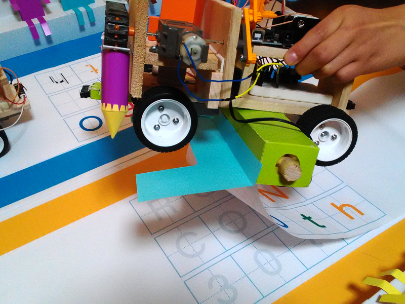
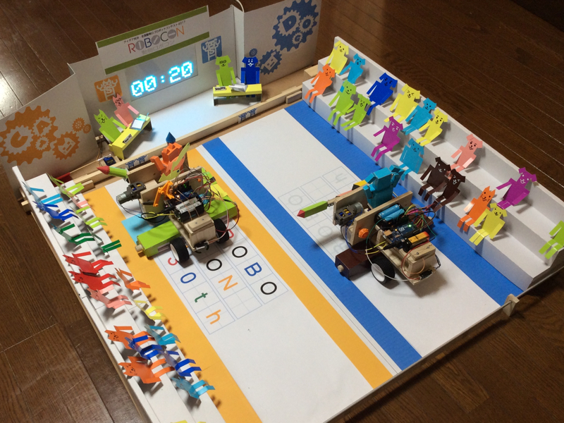

event
2017/04/30 ロボコン30thの作品を作りました！

NHKの高専ロボコン30thのロゴを描くロボットを作りました。
最初は、猫が爪をといでロゴをこすり出すロボットや、
消えるマーカーを使って文字を浮かび上がらせる方法を考えました。
その後、ロボコンに出す作品だし、ロボコンの形にしてみると 面白いかと思い、競走するロボットにしました。
でも、設計をしていくうちに、ロボットに きれいな文字を描かせるのが難しく、悩みました。
そこで、描くこと自体にこだわらず、 描いているように見せる事を考えました。
最初は、猫が爪をといでロゴをこすり出すロボットや、
消えるマーカーを使って文字を浮かび上がらせる方法を考えました。
その後、ロボコンに出す作品だし、ロボコンの形にしてみると 面白いかと思い、競走するロボットにしました。
でも、設計をしていくうちに、ロボットに きれいな文字を描かせるのが難しく、悩みました。
そこで、描くこと自体にこだわらず、 描いているように見せる事を考えました。
エピソードはこんな感じです。
TeamCat vs TeamDogの戦いで、 どっちが先にロゴが描けるかの勝負です。
TeamCatがちょっとずつロゴを描いている横で、 TeamDogが止まってしまいます。
TeamCatがそれを追い越して先にゴール！
TeamCatの勝利です。
TeamCat vs TeamDogの戦いで、 どっちが先にロゴが描けるかの勝負です。
TeamCatがちょっとずつロゴを描いている横で、 TeamDogが止まってしまいます。
TeamCatがそれを追い越して先にゴール！
TeamCatの勝利です。

ロゴを描いているのは、こんな仕組みです。
あらかじめ色付きロゴが、 後ろの長い箱の中に巻き込まれています。
ロボットが走ると、少しずつ 色付きロゴが箱から出てくることによって、
まるでロボットがロゴを描いているように見えます。
なかなかきれいに出て来るようにするのが大変でした。
あらかじめ色付きロゴが、 後ろの長い箱の中に巻き込まれています。
ロボットが走ると、少しずつ 色付きロゴが箱から出てくることによって、
まるでロボットがロゴを描いているように見えます。
なかなかきれいに出て来るようにするのが大変でした。
